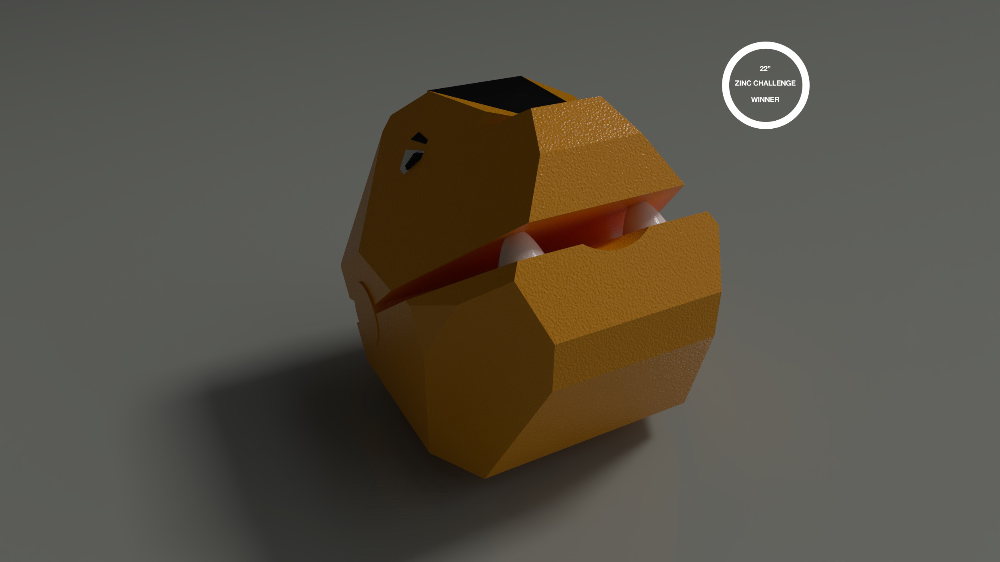
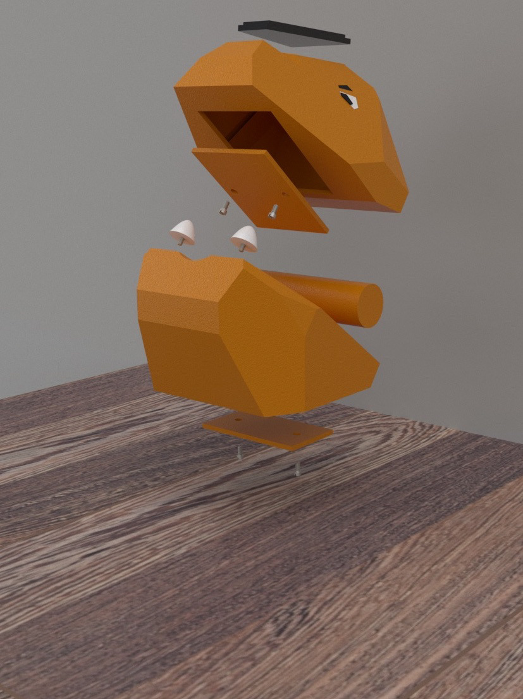

Dino Head Pulse Oximeter


The “Dino Head” Pulse oximeter is designed for all ages but tailored to the use of children. The world of
health
care
and medical devices can be intimidating, so when designing an object for the home the goal was to redefine
what
a pulse
oximeter can look like. “While also making a more fun, accepting, and creative process for tasks as simple
as
taking
oxygen levels. The “Dino Head” attempts to accomplish that through subtle design queues and attention to
materials,
functionality, and use. All while standing out on the countertop.